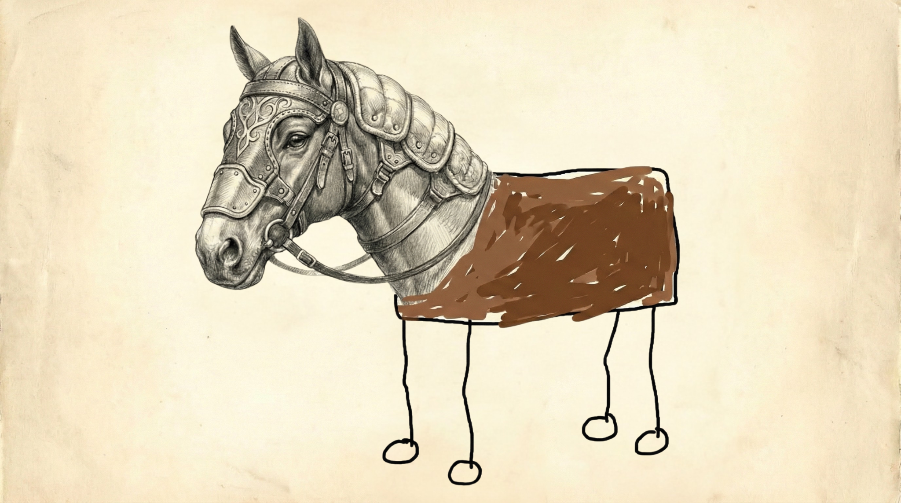

· 한 번만 할 일
· 기준이 아직 흐릿
· 입력이 매번 완전히 다름
· 즉흥 판단이 대부분
RECAP — WEEK 01–02
3주의 흐름
PROMPT → MANIFEST → SKILL.
— 3 WEEKS
— 01 / WEEK 01
PROMPT
말을
걸어본 시간.
걸어본 시간.
"AI한테 지금 하는 한 마디"
↺ 매번 다시 쓴다
— 02 / WEEK 02
MANIFEST
작업장의
헌법을 만든 시간.
헌법을 만든 시간.
"이 폴더는 어떤 작업장인가"
CLAUDE.md · AGENTS.md
— 03 / WEEK 03 · TODAY
SKILL
반복해서
부를 수 있는 기술.
부를 수 있는 기술.
"이 일을 할 때는 이렇게 해"
↗ SKILL.md
지난주
에이전트가 어떤 세계에서 일하는지를 정했다.
→
이번 주
그 에이전트가 어떤 기술을 쓸 줄 아는지 정한다.
02
Speaker Note
지난 2주 사용 후기 듣기 (8분). AI를 한 번이라도 켜봤는지, 무엇을 시켜봤는지, "이건 반복해서 시키고 싶다"는 일이 있었는지 끌어낸다. 그 신호가 곧 스킬의 필요성.
REFERENCES
참고 자료
LINKS &
REFERENCES.
— LINKS
03
Speaker Note
지난 2주의 AI 흐름 X 글들과, 오늘의 맥락 자료(Open Design · Design.md), 스킬 참고 저장소(k-skill · ouroboros). 시간이 남을 때 한두 개만 열어 보여준다.
TODAY'S SENTENCE
오늘의 한 문장
프롬프트는
한 번 하는 부탁,
한 번 하는 부탁,
스킬은
다시 부를 수 있는
작업 절차.
다시 부를 수 있는
작업 절차.
PROMPT
≠
SKILL
CALL AGAIN
04
Speaker Note
오늘 수업 전체를 끌고 갈 문장. 칠판에 적어두고 시작. "좋은 스킬은 멋진 말투보다 능력 · 금지선 · 완료기준이 먼저다"도 함께.
PART I — MAP
— 01 / SECTION
오늘의
지도.
스킬이 어디에 서 있는지 먼저 잡습니다. Prompt부터 Checklist까지.

05
FIVE LAYERS
— 칠판 문장
다섯 개의
역할.
하나의 만능 버튼이 아닙니다. 각자 다른 일을 하는 다섯 층입니다.
PROMPT
지금 하는 부탁
한 번의 요청 — 매번 다시 쓴다
MANIFEST
작업장 벽에 붙은 상시 규칙
CLAUDE.md · AGENTS.md · DESIGN.md — 작업장의 기본 규칙
SKILL ★
다시 부를 수 있는 작업 절차
"이 일을 할 때는 이렇게 해" — 반복 가능한 절차에 이름을 붙인 것
MCP / CONNECTOR
외부 세계에 손을 뻗는 도구
지도 · 메일 · 드라이브 · 데이터베이스처럼 외부 정보와 연결
CHECKLIST
결과를 검사하는 감사관
결과가 잘 나왔는지 확인하는 검찰 · 감사 역할
06
Speaker Note
칠판에 다섯 줄 적기. 오늘 배울 스킬이 이 중 가운데 칸이라는 것만 분명히. MCP는 다음 주 예고편 정도로 가볍게.
NOT A MAGIC BUTTON
주의할 점
스킬은
만능 버튼이
아니다.
한 번만 할 작업은 프롬프트로 충분합니다.
반복되고, 기준이 있고, 입력과 출력이 어느 정도
정해지는 일이 스킬 후보가 됩니다.
— 프롬프트로 충분
+ 스킬 후보
· 반복해서 하는 일
· 매번 비슷한 입력
· 매번 비슷한 출력
· 성공·실패를 말할 수 있음
· 매번 비슷한 입력
· 매번 비슷한 출력
· 성공·실패를 말할 수 있음
07
PART II — HARNESS

— 02 / SECTION
하네스,
다시
복습.
AI를 더 똑똑하게 만드는 게 아니라, 뛰어놀 울타리를 설계합니다.
08
HARNESS → SKILL
하네스 안의 동작
울타리는
구조,
스킬은 동작.
하네스는 AI가 벗어나지 않게 잡아주는 구조이고,
스킬은 그 하네스 안에서 반복해서 쓸 수 있는 동작입니다.
지난주에는 작업장을 정했고, 이번 주에는 기술을 얹습니다.
CLAUDE.md / AGENTS.md# 이 에이전트는 어떤# 작업장에서 일하는가 SKILL.md# 이 에이전트는 어떤 일을# 반복해서 잘할 수 있는가 # 세계관 위에,# 반복 가능한 작은 스킬을 얹는다.
09
Speaker Note
2주차에서 학생들은 세계관과 말투는 빨리 채웠지만 능력 · 금지선 · 완료기준에서 멈췄다. 이번 주에는 순서를 뒤집는다는 점을 예고.
WRITE IN THIS ORDER
순서를 뒤집는다
말투는
맨 마지막.
먼저 이 스킬이 무엇을 할 수 있고,
무엇을 하면 안 되고, 언제 끝났는지를 정합니다.
세계관과 말투는 그다음에 붙입니다.
1. 능력 무엇을 할 수 있는가2. 금지선 무엇을 하면 안 되는가3. 완료기준 언제 끝났다고 보는가4. 입력 무엇을 주면 되는가5. 출력 어떤 형태로 받는가6. 말투/세계관 어떤 캐릭터처럼 # 1~3을 못 쓰면# 아직 스킬이 아니라 프롬프트다.
10
PART III — MAGIC
— 03 / SECTION
에이전트에게
마법을.
"윙가르디움 레비오사" — 이름을 부르면 중간 과정이 생략됩니다.
11
THE METAPHOR & ITS LIMIT
스킬 = 이름 붙인 절차
팔의 각도를
매번 설명하지
않는다.
마법의 이름을 부르면 중간 과정이 생략되고 결과가 나옵니다.
스킬도 반복되는 절차를 이름 붙여 다시 부를 수 있게 만든 것입니다.
단, 비유의 한계
- 01마법처럼 보이지만 설명서가 있다스킬은 무지가 아니라 선택된 추상화다
- 02안쪽을 다 몰라도 쓸 수 있다하지만 잘 고치려면 구조를 알아야 한다
- 03마법의 이름보다 중요한 것언제 써야 하는지가 먼저다
12
SKELETON
스킬 작성의 기본 구조
폴더 하나,
파일 하나면
시작.
skills 폴더 안에 스킬 이름의 폴더,
그 안에 SKILL.md 하나면 됩니다.
frontmatter에 이름과 설명, 본문에 절차를 적습니다.
# 폴더 구조skills/└─ my-skill-name/ └─ SKILL.md # SKILL.md frontmatter---name: my-skill-namedescription: 언제 쓰는지 한 문장--- # 본문: 언제 · 무엇을 ·# 무엇을 하면 안 되는지 · 결과
13
Speaker Note
참고 링크: NomaDamas/k-skill, Q00/ouroboros. 실제 스킬 폴더가 어떻게 생겼는지 하나만 열어서 보여주면 좋다.
PART IV — WHAT TO MAKE
— 04 / SECTION
무엇을
스킬로
만들까.
반복 · 기준 · 정해진 입출력 — 세 가지가 모이면 스킬 후보입니다.

14
SKILL OR NOT
스킬 후보 판별
이건 스킬인가,
프롬프트인가?
○ △ ×
△ 애매함
전시 아이디어 30개 뽑기
반복은 가능하지만 기준이 없으면 결과가 얕아진다
○ 스킬 후보
내 작업노트를 회의록 형식으로 정리하기
입력과 출력이 비교적 일정함
○ 스킬 후보
이미지 레퍼런스를 보고 시각 요소 분석하기
반복 가능하고 기준을 만들 수 있음
× 아님
오늘 점심 메뉴 추천하기
이 수업의 작업 세계와 관계가 약함
○ 스킬 후보
내가 만든 HTML 결과물을 비평하고 수정 제안하기
완료기준과 금지선을 붙이면 강력함
15
THREE ELEMENTS
좋은 스킬의 3요소
CAPABILITY ·
LIMIT · DONE.
— 01 / 능력 · 무엇을 할 수 있는가
— 약한 줄
좋은 아이디어를 내준다.
+ 강한 줄
작업노트에서 반복되는 이미지·소재·감정·기술 키워드를 추출하고 전시 아이디어 5개로 재조합한다.
— 02 / 금지선 · 무엇을 하면 안 되는가
— 약한 줄
이상한 결과를 만들지 않는다.
+ 강한 줄
사용자가 주지 않은 작가명·전시명·기관명은 사실처럼 꾸며내지 않는다.
— 03 / 완료기준 · 언제 끝났는가
— 약한 줄
잘 정리되면 끝난다.
+ 강한 줄
각 아이디어마다 제목·한 줄 설명·관객 경험·필요한 기술·가장 약한 지점이 포함되면 완료로 본다.
16
Speaker Note
세계관과 말투는 마지막에. 먼저 능력 · 금지선 · 완료기준을 정한다. 책상을 돌며 가장 먼저 묻는 질문: "이 스킬이 절대 하지 말아야 할 것 한 줄은?"
PART V — HANDS-ON

— 05 / SECTION
직접
만들어
본다.
반복 업무 3개 → 하나 골라 SKILL.md → 실행하고 실패를 읽는다.
17
PRACTICE 01
실습 1 / 반복 업무 찾기
내 작업의
반복 업무
3개.
매번 다시 설명하기 귀찮은 일은 무엇인가?
"이건 내 스타일이 아닌데" 싶은 지점은 어디인가?
잘 끝났다고 판단하는 기준은 무엇인가?
## 내 작업에서 반복되는 일 3개 1. ______________________2. ______________________3. ______________________ ## 오늘 스킬로 만들 하나 - ______________________
18
Speaker Note
약 15분. 지난주 만든 CLAUDE.md / AGENTS.md를 열어두고, 그 작업장에서 반복되는 일을 떠올리게 한다.
PRACTICE 02
실습 2 / SKILL.md 초안
템플릿을
빈칸부터
채운다.
능력 · 금지선 · 완료기준을 먼저,
입력 · 출력을 그다음,
말투 · 세계관은 가장 마지막에 채웁니다.
---name: my-skill-namedescription: 언제 쓰는지 한 문장--- ## 이 스킬이 필요한 순간## 능력## 금지선## 완료기준## 입력## 출력## 말투 / 세계관
19
Speaker Note
약 15분. skills 폴더 → 스킬 이름 폴더 → SKILL.md 만들고 템플릿 붙여넣기. 빈칸 채우는 동안 책상을 돌며 금지선 한 줄을 먼저 묻는다.
PRACTICE 03 — THE LOOP
실습 3 / 실행 · 실패 읽기 · 보강
실패를 읽고
한 줄
보강한다.
첫 버전은 대부분 부족합니다.
부족한 결과를 보고 금지선이나 완료기준을
한 줄 더하는 것이 오늘의 핵심입니다.
-
1차 실행스킬이 일을 어떻게 해석했는지 본다
-
결과 관찰의도와 어긋난 지점 1개를 고른다
-
한 줄 보강금지선 또는 완료기준을 한 줄 추가한다
-
다시 실행같은 입력으로 한 번 더 돌린다
-
전/후 비교한 줄이 결과를 어떻게 바꿨는지 확인
20
Speaker Note
실패 읽기 질문: 일을 잘못 이해했나 / 입력이 부족했나 / 금지선이 없어 마음대로 했나 / 완료기준이 없어 애매하게 끝났나 / 프롬프트로 충분한 일을 억지로 스킬로 만든 건 아닌가.
SHOW & TELL
공유 & 회고
능력,
금지선,
한 줄 보강.
결과물이 예쁜지보다, 내가 만든 기준이 AI의 행동을 얼마나 바꿨는지가 중요합니다.
- 01내가 만든 스킬 이름 — 언제 쓰는가
- 02능력 한 줄
- 03금지선 한 줄
- 04완료기준 한 줄
- 051차 실행에서 오해한 것 → 보강 후 달라진 것
21
Speaker Note
각자 1분 공유. 시간이 빠듯하면 1 · 3 · 5번만. 서로의 "스킬 언어"가 어떻게 다른지를 보게 한다.
END OF WK03
NEXT — WEEK 04
나의 에이전트
마법 목록.
다음 주까지 내 에이전트에게 가르치고 싶은 스킬 3개를 적어옵니다.
각 스킬마다 능력 · 금지선 · 완료기준 세 줄만.
## 스킬 이름- 능력:- 금지선:- 완료기준:
WK\04
END / 22
Speaker Note
다음 주 연결: 스킬을 더 안정적으로 관리하기 · DESIGN.md와 연결해 시각 결과물 기준 만들기 · 필요하면 MCP / Connector로 외부 데이터 연결 · 결과물을 공유 가능한 형태로 정리하기.